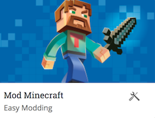
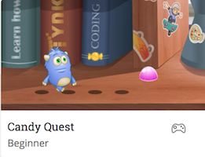

Extend Yourself - Code.org: Design a Math Game
 Hour of Code
Hour of Code
Code your own game of Angry Birds.
"Can you help me catch the naughty pig?”
Stack a couple of 'move forward' blocks together and press Run to see if you can catch the naughty pig.
Build Cool Games
Learn to code and build cool games with Tynker. Create an account and check out these cool activities:
Minecraft Modding - Customize your Minecraft world with Tynker coding and create your own Minecraft skins.
Candy Quest - Build your character and then program your character to play Candy Quest.
Flappy Multiples Math
Build more math games that help your friends learn more multiplication facts. Try working with multiples of 6, 8, and 9.
Flappy Division
Is it possible to program Flappy to divide? Test out a few of your ideas. If it is possible, which blocks did you use to model division? If it is not possible, describe the programming blocks that would have been useful to show division. It may be helpful to work with a partner or a team in this activity.